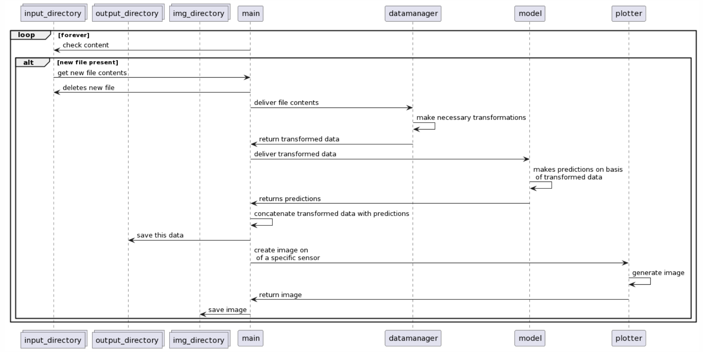

Assignment 5: A complete project¶
Introduction¶
In this last assignment, you are asked to work on a relative big application which you need to divide in several classes. You are going to develop a small pipeline with several interacting components that work independent of each other. During the development, you need to take into account all the things we talked about in this module.
The application you are going to make, makes use of a trained machine learning model, so this assignment is kind of an integration of DS3 with Programming 2. Have a look at the general machine learning development cycle below. Though we will go through all the steps, the focus will be on steps 3, 4, 5 and 6.

Step 1: getting and transforming the data¶
For this exercise, we are elaborating on the anomaly detection study case that is part of the unsupervised part of DS3. Head over to that notebook, study its contents and download the accompanying dataset. You can also find the dataset at Kaggle: https://www.kaggle.com/datasets/nphantawee/pump-sensor-data
Use your own dataset
You can also use your own dataset, but only if it fulfills the following requirements:
- There is a logical (ontological, domain-specific) reason why this dataset grows over time, e.g. when more images become available every month, or new prices of something are published every day, or new network connections are delivered every week;
- The data you already have is large enough (contains enough instances) to be split along the lines described above, i.e. you must be able to train a model on roughly three-fifth of the dataset and test the complete pipeline at least twice on the remaining splits;
- In order for the model to work correctly, the data needs some kind of non trivial transformation, like removing outliers, or merging, dropping or calculating columns;
- Every run of the model on new data should result in an interesting plot of the data.
Please check this with the teacher.
The dataset contains sensor data from 1 April to 31 August 2018. We're going to train the model on the months April, May, and June and then use the trained model to predict the anomalies of the months July and August. Split the original dataset among these lines, so that eventually you have three files. We use the first of these to actually train the model, and then feed the second and third files to this persisted model sequentially.
Step 2: create the model and the drawer¶
Using the first of the three splits described above, train one of the models from the notebook, or use your own realisation. Note that in order to do this training, some data-transformations are necessary. Isolate these relevant transformations, so that they can be performed later on the two remaining sets. Train the model on the transformed dataset. Use one of the techniques described on scikit-learn.org to persist the model on your local file system.
Transform only the training-data
For this exercise, it is imparitive that you perform the data-transformations after you split the original data and only on the training-data. In this way, we can correctly simulate the entering of future data in our pipeline.
Study the method plot_sensor_anomolies(sensor, name) that you can find in the notebook. In the current setup, this method can only work if the dataframe df is defined within the scope of the complete notebook (so only if df is a global variable). Refactor this method so that is independent of any global variables (global variables are bad news in general). Also, change its functionality so that it returns the plot instead of displaying it.
Step 4: listening for new data¶
Now that we have trained and saved our model, it is time to put it into production. For this to work, we are going to make another class that looks at a specific directory. When a new data file is uploaded to this directory, this class will load the data in that file, apply the necessary changes and use our model to predict new new values. It then saves the transformed data with the predictions in another directory and removes the original data file.
Apart from saving the transformed and enriched data, it will also create images of certain sensors and save those in the img directory – their filename displaying both the sensor and the timestamp. Have a look at the sequence diagram below to get an idea of what is happening.

The whole process need to be logged in a log-file. A typical run will produce the following lines in this log-file:
2024-06-11 10:09:32 Found new data file
2024-06-11 10:09:32 Loaded the file
2024-06-11 10:09:34 Received transformed data
2024-06-11 10:09:38 Received predicions
2024-06-11 10:09:38 Saving predictions
2024-06-11 10:09:40 Saving image2 2018-07-sensor04.png
2024-06-11 10:09:40 Saving image2 2018-07-sensor51.png
2024-06-11 10:09:40 Resuming listening
If the new file in the input-directory does not contain data that is eligable for the system, an error needs to be logged to the log-file. This should, however, not break the running of the application.
Test your realisation with the two separate data files you have created – the ones containing the data for July and for August: when you put one of them in the input-directory, the whole cycle should start and create a new data file in the output-directory and a new image in the img-directory.
Technical requirements
- all files and classes should be independent of each other: they should adhere to the SOLID-principles.
-
the application should make use of a file
application.jsonin which the following settings are present:- the location of the
input-directory - the location of the
output-directory - the location of the
img-directory - the names of the sensors that needs to be drawn
- the interval (in seconds) with which the
input-directory is checked for new files
- the location of the